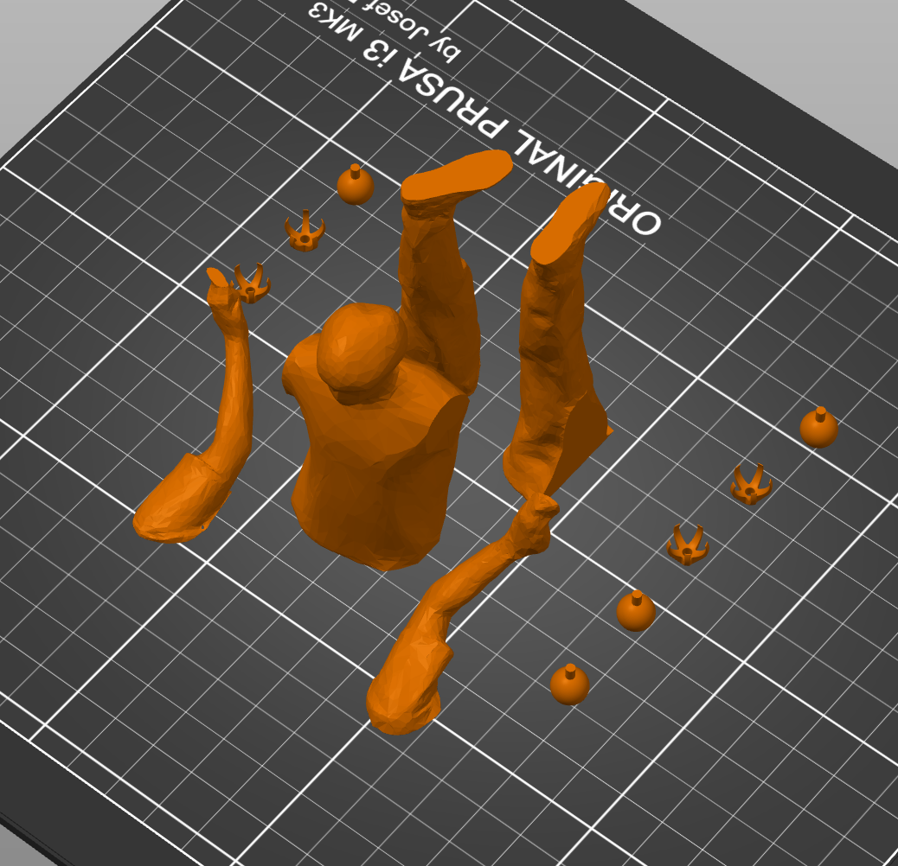

<div class="textcontainer">
<p class="margin"> </p>
<h2 align="center"><b><u>Week 5: 3D Design and Printing</u></b></h2>
<p class="margin"></p>
<div class="flexrow"></div>
<p></p>\*record scratch\* \*freeze frame\* Yep, that's me. You're probably wondering how I ended up in this situation. It all started in the PS 70 lab,
when I was idling around the 3D printers, figuring out what to print. Luckily, my classmate and new friend Wyatt was there to brainstorm, and he brought
up the idea of doing a full body scan with this app called *Polycam*. So we set up the environment, and after a few minutes of doing the
<a href="https://www.youtube.com/watch?v=qFaUhLkdRPg">Mannequin Challenge</a>, the scan was ready (see above).
<p></p>In order to turn this fledgling idea into a tangible 3D action figure, I needed to ultimately convert this scan file (GLTF) into an STL to upload to
PrusaSlicer. Some intermediary steps were necessary. First, I converted the GLTF file to an OBJ file, imported it to Fusion as a mesh, and sliced it up
into different limbs.
<div class="flexrow"><img src="action_figure_fusion.png" alt="fusion action figure model" style="width:30%" border="3px"></div>
<p></p>
Then, I added some ball-socket joints that I found on Thingiverse.
<div class="flexrow"></div>
<p></p>
The final step was exporting to file to PrusaSlicer, adding some supports, and slicing it to the 3D printer.
<div class="flexrow"></div>
<p></p>
Once printed, it was a (seemingly) simple matter of assmebling the parts. The main issue I encountered was securing the joints to the body and limbs.
To do this, I used a handy little substance called super glue, which apparently works well on PLA. The ball joints needed a hole to fit into, so I
drilled some tiny holes in the body and glued in the ball joints. The socket joints brought up a different issue---because the socket parts were so
tiny, the printer had some difficulty in producing a clean print. The ends of two of the socket joints snapped and rendered themselves useless,
so I had to re-print 3 additional times to get it right again. But from there, it was just a glue-and-stick operation.
<p></p>
Here is the finished product:
<p></p>
***ATTACH FINAL VIDEO***
<p></p>
The files are attached here, in case you ever want to 3d print an Eli action figure:<p></p>
<a download href='./eli_action_figure.3mf'>Download my 3mf file! <p></p>
<a download href='./action_figure.gcode'>Download my gcode file!
</div>